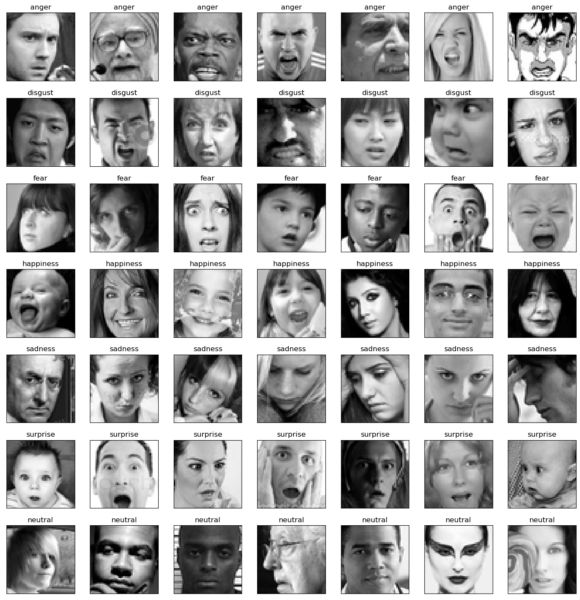
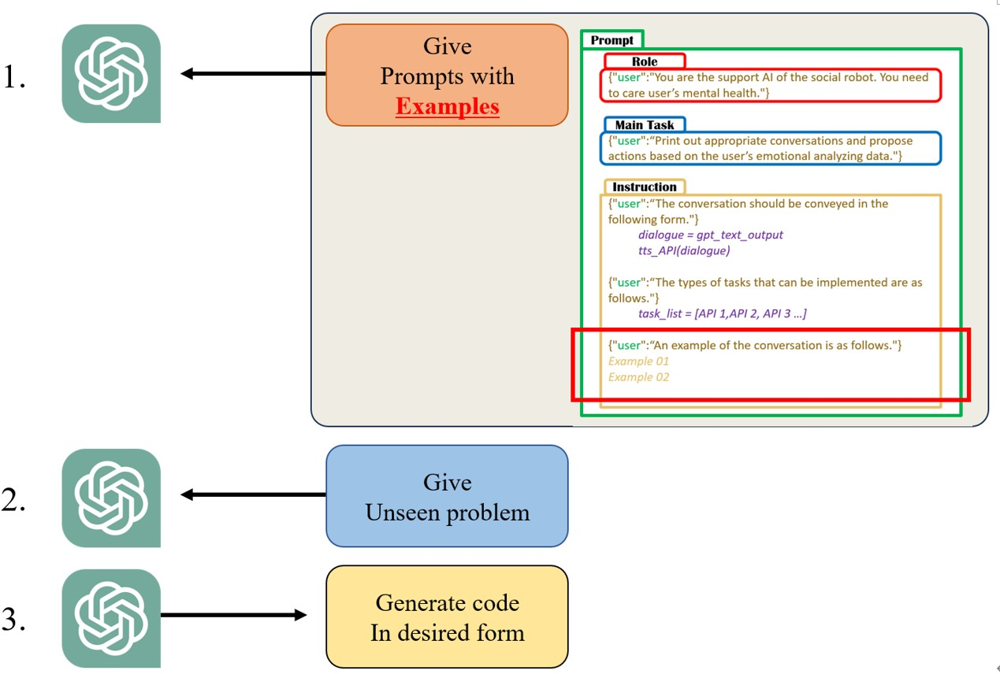
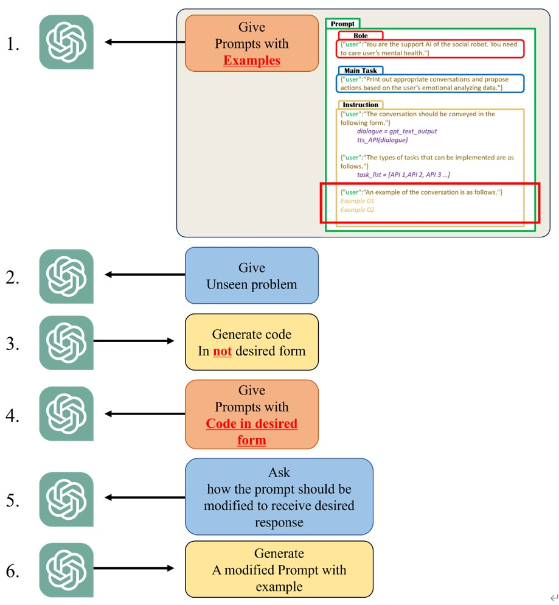
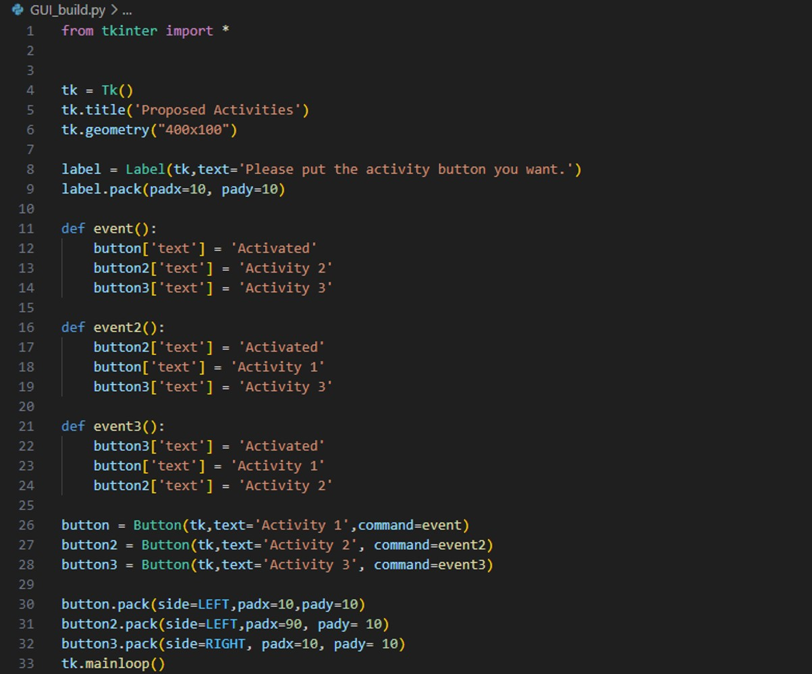
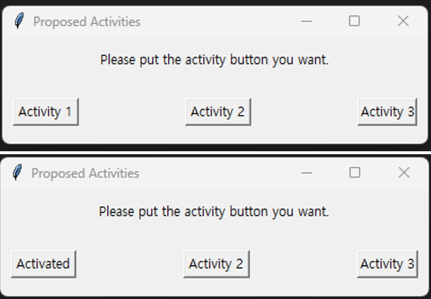

In this blog post, we will share our experience using the VGG16 model in facial emotion recognition tasks and explore prompt engineering.
VGG1: What AND Why?
VGG16, proposed by Karen Simonyan and Andrew Zisserman in 2014, is a classic Convolutional Neural Network (CNN). Known for its simple yet deep design, this model is particularly suitable for image classification tasks. It consists of 13 convolutional layers and 3 fully connected layers, enhancing the effectiveness of image feature extraction by using small convolutional kernels and a deep structure.

In facial emotion recognition tasks, we emphasize the lightweight nature of the model to ensure efficient operation in resource-constrained environments. The relative simplicity of VGG16 makes it an ideal choice, requiring less computational resources and achieving remarkable success in the field of image processing due to its widespread application.
DataSet: FER2013
We selected the FER2013 dataset for our model, consisting of 35,886 facial expression images. The dataset includes 28,708 training images, 3,589 public test images, and 3,589 private test images. Each image is a grayscale image with a fixed size of 48×48 pixels, representing one of seven emotions (0-6).
Results and Analysis
We achieved satisfactory results through training and testing on a large facial emotion dataset. The overall accuracy reached 0.85, indicating significant success in facial emotion recognition tasks.
However, for specific categories, we noticed that the model's performance was relatively low. Specifically, our model performs well on the "happy" category, but poorly on the "normal" and "sad" categories. We think one of the reasons for this is that there is less data in these two categories, but more interestingly, we found that some of the images are difficult to judge even for humans. We think this phenomenon may stem in part from the difficulty of the images themselves in both categories. For example, the human expression in some images is difficult to identify as sad or normal, and the normal expression often shows no emotion, which is often mistaken for sad. This subjectivity and subjective difference may be one of the reasons for the low performance of the model.
Tip on Prompt Engineering
We will introduce tips on Prompt Engineering when learning ChatGPT. First, learning of ChatGPT based on Prompt Engineering executed with follow processes.
There are some cases when process 3 is not done properly. In this case, generally, modify again and again the prompt delivered to ChatGPT in process 1 through try and error, and repeat this process until the desired type of answer is generated.
However, there are ways to shorten this process for time efficiency. The point is to ask ChatGPT once again about how to modify the prompt.
This process is as follows:
Through this process, prompt engineering can be performed more efficiently.
Additionally, below is a simple GUI production code and example of created GUI. This code is written based on the tkinter API, and we plan to use this to allow ChatGPT to propose activities to user.
 